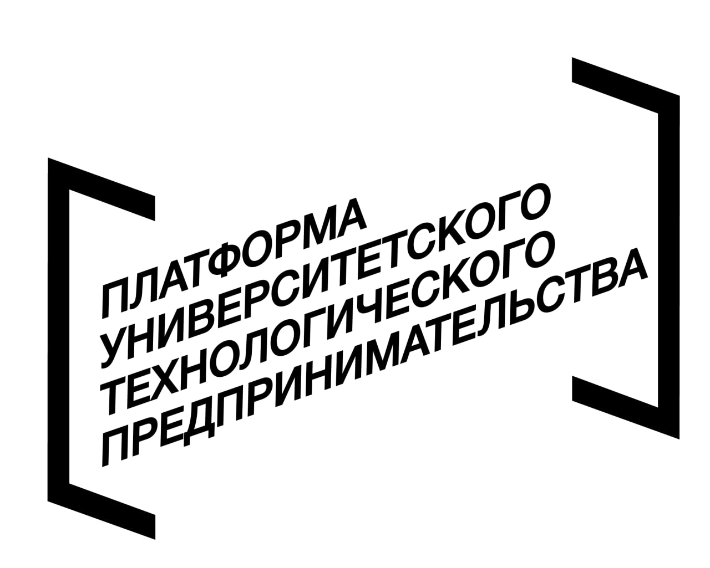
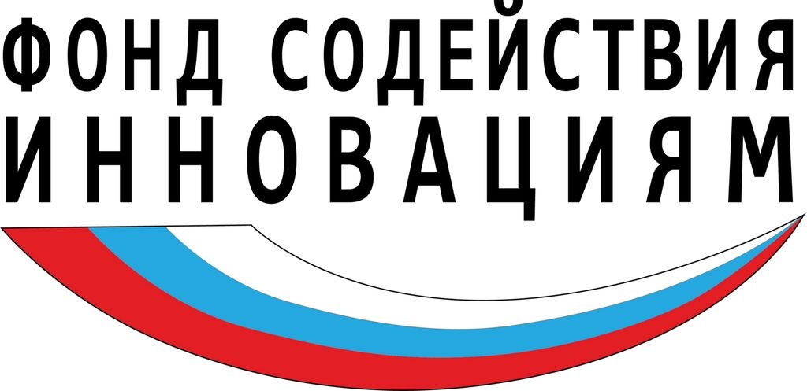
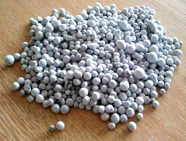
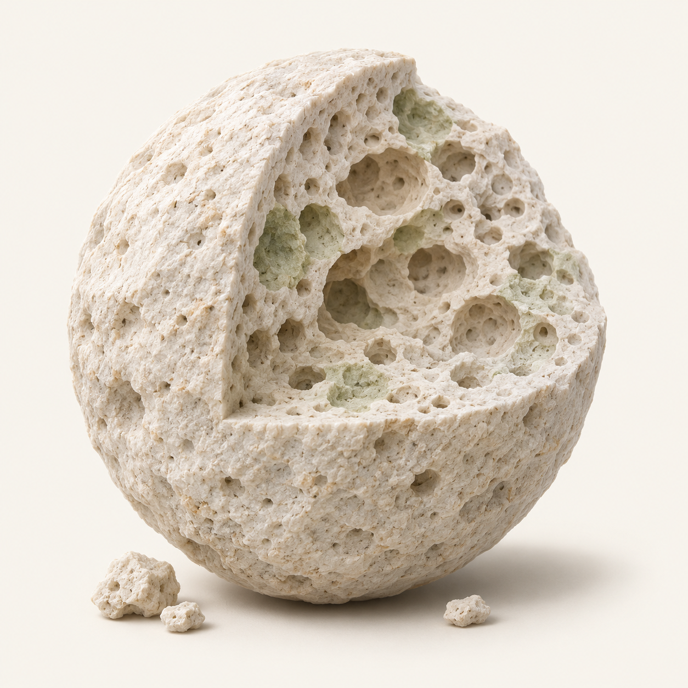
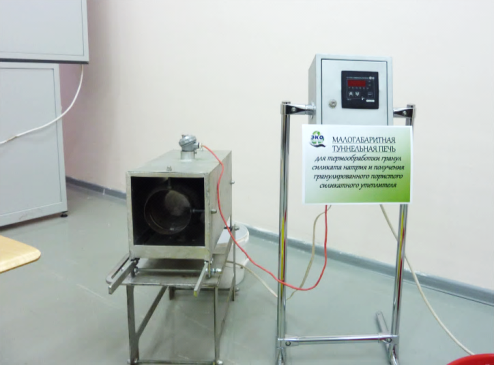
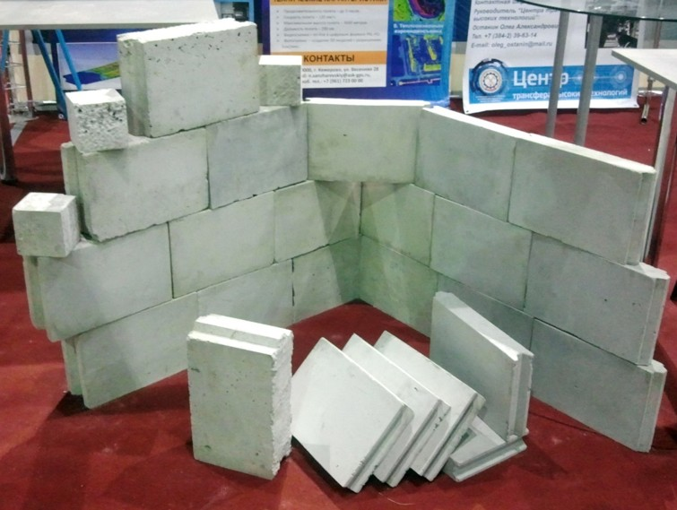

Огнезащитные свойства
Негорючий материал. Минеральный состав рассчитан на применение при высоких температурах.
Проект реализован при поддержке Фонда содействия инновациям
в рамках программы «Студенческий стартап»
мероприятия «Платформа университетского технологического предпринимательства»
федерального проекта «Технологии»


Разрабатываем негорючие теплоизоляционные материалы на основе пористого силикатного заполнителя и минеральных добавок.

Меньше потерь тепла.
Больше возможностей для строительства.
01 / Задача
Объединяем пористый заполнитель, цемент и модифицирующие добавки, чтобы получать материалы для зданий и промышленности.
Негорючий материал. Минеральный состав рассчитан на применение при высоких температурах.
Пористая структура заполнителя лежит в основе теплоизоляционных свойств плит и облегчённых блоков.
В качестве минеральных модификаторов проект предусматривает золошлаковые отходы предприятий угольной энергетики.
Одна технология служит основой для стеновых блоков, облегчённых блоков и теплоизоляционных плит.
Внутри материала
Пористый заполнитель и минеральные компоненты — основа теплоизоляционных блоков и плит.

Пористый силикатный заполнитель лежит в основе теплоизоляционных свойств материала.
Стеклопор, цемент и минеральные добавки образуют состав блоков и плит, описанных в проекте.
Золошлаковые отходы предусмотрены как модифицирующие добавки для производства материала.
Схема поясняет идею проекта. Размер пор и пропорции компонентов на иллюстрации условны.
Жидкостекольная композиция
и минеральные модификаторыПористый заполнитель
гранулы стеклопораБлоки и плиты
с цементом и добавками
Оборудование исследовательской базы проекта
02 / Технология
Состав и способ изготовления направлены на снижение затрат по сравнению с существующими аналогами.
Жидкостекольная композиция и минеральные модификаторы на основе золошлаковых отходов.
Изготовление гранулированного пористого силикатного материала — стеклопора.
Соединение заполнителя с цементом и добавками для производства блоков и плит.
03 / Материалы
Предусмотренные проектом изделия для строительных и теплоизоляционных задач.

Образцы изделий из презентацииВыберите тип материала
Для задач теплоизоляции зданий, оборудования и трубопроводов в предусмотренных проектом областях применения.
Новый взгляд на привычные ресурсы
Использование золошлаковых материалов помогает вовлекать вторичное сырьё в производство строительных изделий и экономить природные ресурсы.
04 / Применение
Направления использования, на которые ориентирован проект.
Внутренние перегородки с теплоизоляционными и шумоизоляционными свойствами.
Утепление подвалов, чердаков и жилых мансардных помещений.
Теплоизоляция помещений животноводческих предприятий и фермерских хозяйств.
Тепловая изоляция высокотемпературного оборудования и трубопроводов.
05 / Люди и исследования
Проект объединяет опыт в пожарной безопасности, химической технологии и эксплуатации зданий.
Аспирантура КузГТУ по специальности «Пожарная безопасность», 2022–2025.
Кандидат технических наук, доцент кафедры химической технологии твёрдого топлива КузГТУ.
Кандидат технических наук, доцент кафедры химической технологии твёрдого топлива КузГТУ.
06 / Вопросы
В основе изделий — гранулированный пористый силикатный заполнитель, цемент и минеральные добавки. Проект предусматривает использование золошлаковых отходов в качестве модификаторов.
Стеновые блоки, облегчённые стеновые блоки и теплоизоляционные плиты. Формат и характеристики подбираются под задачу применения.
Диапазон от −60 до +750 °C. Рабочие условия конкретного изделия необходимо согласовать с командой и подтвердить испытаниями.
На сегодняшний день проводятся исследования и производятся испытания экспериментальных образцов. Текущую готовность, наличие образцов и условия поставки уточняйте у команды проекта.
Статус регистрации и доступные протоколы испытаний следует запросить у команды.
Напишите Марии Абдуллиной на электронную почту, указанную ниже. Укажите область применения, предполагаемый объём и условия эксплуатации.
Следующий шаг
Строительным организациям, промышленным предприятиям и исследовательским партнёрам.
Руководитель проекта
Мария Хакимовна Абдуллина
abdullinamh@yandex.ru ↗Кемерово, Кузбасс